This page displays the location, drop odds and miscellaneous informations about all the new items from the Shadow Champions mod all in one place. You can use the filters below to find a certain type of items, or you can also use the search function of your browser (CTRL+F) to find a specific item by its name.
| Icon | Name | Location | Additional Informations |
|---|---|---|---|
 | Abbhorence | ||
| 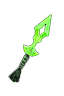 | Acid Shards | Meltdown With enough precision, a continuous stream of acid-covered projectiles can break down even the most durable of armors. 10 Charge Levels 50 Instant Poison Damage 200 Reduced Armor for 2.0 Seconds |
|
 | Aeacus' Judgement | ||
| Affliction | |||
| Ageless Maw | Frigid Winds of the Graveless The cold of the underworld pierces through the air, as if carried by the wings of Death itself. 60.0 Second(s) Recharge 200 Energy Cost 220 Piercing Damage 220 Cold Damage 80% Chance to Fumble attacks for 4.0 Seconds 80% Chance of Impaired Aim for 4.0 Seconds 4.0 second(s) of Skill Disruption |
||
 | Aimon-syd | Part of the set : Embodiment of Corruption | |
 | Al-al'a | Part of the set : Embodiment of Corruption | |
 | Amaranthine Flame | Flaming Terror Mysterious violet flames surrounding you and your allies intensify the power of fire and vitality attacks. The enemies touched by the flame shall run for their lives, and those most vulnerable to it will be reluctant to get near. 4.0 Second(s) Recharge 4 Active Energy Cost per Second 15.0 Meter Radius +20% Burn Damage 40 Vitality Decay over 2.0 Seconds +20% Vitality Decay 30 Fire Damage 5.0% Chance of 2.0 - 4.0 second(s) of Fear -30% Energy Regeneration 40 Vitality Decay Retaliation over 2.0 Seconds +15% Less Damage from Undead |
|
| Amazonian Anklets | * Shadow version available. | ||
 | Am-heh's Touch | ||
| 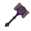 | Anathema | * Shadow version available. | |
| Anax's Medal | |||
 | Ancient Wrappings | ||
  | Anteok Antlers | ||
 | Ant Queen's Royal Wraps | Ant Form Shrink your body to swiftly avoid incoming attacks. However, taking such form makes your attacks much less threatening. 240.0 Second(s) Recharge 15 Active Energy Cost per Second 30.0 Second Duration -50% Total Damage -50% Offensive Ability +75% Total Speed 75% Chance to Dodge Attacks 75% Chance to Avoid Projectiles |
|
 | Apprentice Shield | ||
 | Aquatic Prism | ||
 | Arcane Fury | Part of the set : Arcane Barrage | |
 | Arcanist's Secret | Ternion Attack This powerful wizard's trick causes your staff to shoot three projectiles by channeling magical energy into it. Initially each hit is not as powerful as a normal attack but the effectiveness increases every level. 37 Energy Cost Launches 3 Projectile(s) -10% Total Damage |
|
 | Arctic Desolator | Arctic Beam Concentrate the staff’s power to form an unstoppable beam of explosive arctic magic. 1 Energy Cost 3.0 Meter Radius 100% Chance to pass through Enemies 2 Charge Levels 160 Frostburn Damage per Second 15% Slower Movement for 1.0 Seconds 100% Increase in Projectile Speed |
|
 | Armbands of the Furnace | Part of the set : The Hell Furnace | |
| 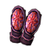 | Armguards of Myriad Dimensions | Part of the set : Journey of Myriad Dimensions | |
 | Ashoka Sunshield | ||
 | Avenger's Spleen | Gathering Flames The flames of victory grow ever stronger as each accurate shot increases your agility and fire damage. Each stack produced decays slowly. 2 Energy Cost 10 Charge Levels +100% Fire Damage +100% Burn Damage +30% Attack Speed +60% Casting Speed * Shadow version available. |
|
 | Axe of Visions | Mind-Reading By foreseeing your opponent’s next attack, you’re able to deliver an unavoidable blow. 3 Charge Levels 100% reduced Defensive Ability for 2.0 Seconds |
|
 | Backstabber | ||
 | Baetylus Spear | War Wind Executes a devastating spinning attack that can damage up to four enemies. Initially each hit is not as powerful as a normal attack but the effectiveness increases every level. 8.0 Second(s) Recharge 68 Energy Cost 360 Arc of Attack 4 Target Maximum -21% Physical Damage +300% Movement Speed |
|
| 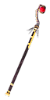 | Bandit's Clutch | Stone Form An impervious layer of rock envelops you for a short duration boosting regeneration but prohibiting movement. 24.0 Second(s) Recharge 84/108/124 Energy Cost 6.0 Second Duration 100% Damage Absorption +45.0/85.0/116.0 Healh Regeneration per second |
|
| Band of Illusions | |||
 | Bane Gauntlets | Reversal Change the configuration of your gauntlets to alter the bonuses received by them. Cannot be dispelled. +700 Energy -30% Armor Protection |
|
 | Barbarian's Pit Trophy | Toughen Up Under the trance of battle, each attack reinforces your endurance. 2 Energy Cost 15 Charge Levels +30.0 Health Regeneration per second +150% Health Regeneration +150 Defensive Ability +15% Attack Speed +15% Armor Protection 15% Physical Resistance |
|
| Barrier of Myriad Dimensions | Part of the set : Journey of Myriad Dimensions | ||
 | Battlemonger's Bow | ||
  | Bear Claws | ||
 | Bearer of Decay | ||
   | Behemoth Jawbone | ||
 | Bereaving Touch | ||
| Bijou of Forbidden Arcane | |||
 | Blackening of Valor | ||
 | Blaze Blade | ||
| Blaze Ring |
| ||
 | Bloodbath Raiment | * Shadow version available. | |
| Bloodcrazed's Craving | |||
 | Bloodstained Ruby | ||
 | Bolina's Fate | ||
| Bonechill Sapphire | Iceshatter Bomb Conjure a glassy snowdome, tightly containing the essence of the great winter, and hurl it into a group of enemies. Both the magical blast and the crystal shrapnels are powerful enough to shatter bones, cripple movement, and freeze bodies. 12.0 Second(s) Recharge 80/105 Energy Cost 1 Projectile(s) 4.0 Meter Radius 8 - 12/10 - 14 Fragments 115/170 Damage 400/600 Frostburn Damage over 5.0 Seconds 90/135 Cold Damage 33.0/44.0% Chance of 2.0 second(s) of Freeze 30/35% Slowed for 5.0 Seconds |
||
 | Bonedust Ring | Grants a single bonus point to a random Skeleton skill from Necromancy. When forged, this ring loses some of its stats. |
|
 | Book of the Dead |
| Abysmal Choir Open the tome to release the agonizing screams of the myriad tortured souls trapped inside. The afflicted enemies will run in crippling terror, while their life forces are sapped away. 16.0 Second(s) Recharge 900 Vitality Decay over 6.0 Seconds 300 Life Leech over 6.0 Seconds 300 Energy Leech over 6.0 Seconds 450 Vitality Damage 1.0 - 6.0 second(s) of Fear 33% Slowed for 6.0 Seconds |
| 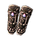 | Bracers of Orion | ||
 | Brizo's Guidance | ||
 | Brôma Theôn | Required Reagents : |
|
| Brooch of Spectral Webs | |||
| Bug | |||
 | Burning Chestguard | ||
 | Burning Feather | ||
 | Burning Ice | Aspect of Elemental Forces Each hit you take has a chance of invoking a burst of elemental energy from the staff. 4.0 Second(s) Recharge 20% Chance of Activating 6.0 Meter Radius 94 Fire Damage 94 Cold Damage 50.0% Chance of 1.0 second(s) of Stun 120 Energy Reserved |
|
 | Burning Witches' Plea |
| |
| Cackling Witch | |||
 | Cage of the Furnace | Part of the set : The Hell Furnace | |
 | Cape of Cold Winters | ||
 | Captain Nemo's Tricorne | Vernie the Parrot Ahoy, matey! Let's kill those landlubbers and take the booty! Arrr! 90.0 Second(s) Recharge 150 Energy Cost Vernie the Parrot Attributes: 1200 Health 450 Energy Vernie the Parrot Abilities: Basic Attack 50 Damage 50 Piercing Damage Beak in the Eye 50 Damage +25% Pierce Damage 50 Piercing Damage 15% reduced Offensive Ability for 3.0 Seconds 10% Chance to Fumble attacks for 3.0 Seconds 10% Chance of Impaired Aim for 3.0 Seconds You are a Pirate! 40.0 Second(s) Recharge 100 Energy Cost 20.0 Second Duration 15.0 Meter Radius +15% Pierce Damage +15% Bleeding Damage +10% Total Damage +20% Strength Dodge Attacks 33% Chance to Dodge Attacks 33% Chance to Avoid Projectiles |
|
| Centurion's Crest |
| ||
| Centurion's Lance |
| Storm Enchantment Imbue the bodies of yourself and nearby allies with flowing electrical energy. 4.0 Second(s) Recharge 2 Active Energy Cost per Second 16.0 Meter Radius +16/24/30% Lightning Damage +16/24/30% Electrical Burn Damage +25% Stun Duration 15/30/45 Lightning Damage 50 Energy Reserved 25.0% Chance of 1 - 25/25 - 50/50 - 75 Lightning Retaliation |
|
 | Centurion's Mantle |
| |
 | Centaur Hooves |
| |
 | Ceramic Ankh | ||
 | Chaotic Reflector | Telekinetic Pulse By deeply concentrating your mind, you’re able to hurt enemies regardless of the distance between you. 5.0 Second(s) Recharge 64 Energy Cost 1.0 Second Duration 5.0 Meter Radius 190 Damage 98 Vitality Damage |
|
| Chaotic Smasher | Batter A shield attack that hits for increased damage and slows enemies' attacks for a duration. 4.0 Second(s) Recharge 15 Energy Cost 12 Damage +6% Physical Damage 23% Slower Attack for 8.0 Seconds |
||
 | Chapter Four | ||
 | Cheirokmeta | ||
 | Chill Ring |
| |
 | Chillwind Vest | Arctic Power This aura encircles you with bone-chilling cold. 2.0 Second(s) Recharge +25% Cold Damage +40% Frostburn Damage 30 - 35 Cold Damage 75 Energy Reserved 15.0% Chance of 150 Cold Retaliation |
|
 | Claws of Laelaps | Part of the set : The Hunting Paradox | |
 | Cloak of the Underworld | ||
| Coat of Myriad Dimensions | Part of the set : Journey of Myriad Dimensions Timetraveller's Technique This is the signature ability of the timetravellers, charigng energy in your additional energy in your weapon for incredible prowess. 1 Energy Cost 15 Charge Levels 15% of Attack damage converted to Health +60% Inteliigence +30% Attack Speed +90% Casting Speed +15% Armor Protection |
||
 | Cocytean Embrace | Triplicate Your staff attacks get divided into three projectiles, increasing your area of attack. Requires a staff. 41/49 Energy Cost 45/57% Chance to pass through Enemies Launches 3 Projectile(s) -14/-5% Total Damage |
|
| Coil of Torture | |||
| Coil of the Leech | |||
 | Commando's Lucky Charm | ||
 | Coral Warp-Bow | * Shadow version available. | |
 | Corpse Desecrator | * Shadow version available. | |
 | Corrupted Armor | ||
 | Corrupted Bracers | ||
 | Corrupted Greaves | ||
 | Corrupted Headdress | ||
 | Cover of the Timewarped | ||
 | Crest of Warfare | ||
 | Crimsonbolt Steelblade | ||
 | Croaker's Arms | ||
| 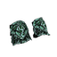 | Croaker's Legs | ||
 | Croaker's Suit | ||
 | Crown of the Unhallowed | ||
| Crystal Crane | |||
| Crystal of Hope | Required Reagents : |
||
 | Crystal Spire | ||
 | Cursed Binding of Murkmire | Murkmire Nova Imitate the vile magic of the bog-dwelling inhabitants of Murkmire, damaging nearby enemies with steady blasts of smothering poison and decay, all while regenerating your health with theirs. 95 Energy Cost 4.0 Meter Radius 15% Chance for one of the following: 200 Poison Damage per Second 200 Vitality Decay per Second 33% Slowed for 1.0 Seconds 150 Instant Poison Damage 125 Vitality Damage 5% of Attack damage converted to Health |
|
| Cursedwood Bow | |||
 | Curved Stormcutter | ||
   | Cyclop's Eye | ||
 | Cyzician Armor | Part of the set : Uniform of Cyzicus | |
 | Cyzician Helmet | Part of the set : Uniform of Cyzicus | |
 | Dagger of Boundless Potential | ||
 | Dáinsleif | * Shadow version available. | |
 | Darkfang | ||
 | Dark Knight's Revenge | Required Reagents : |
|
 | Dark Priest's Wraps | * Shadow version available. | |
| 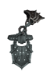 | Darkwyrm Harness |
| |
 | Dauntless Step | Part of the set : Sovereign of Void | |
 | Deadeye's Leather Gauntlets | ||
 | Death Priest's Cuirass | ||
| Death Priest's Grip | Deathchill Aura A deathly chill radiates from the character slowing the attack and movement of enemies as it diminishes their life. 4.0 Second(s) Recharge 1 Active Energy 1.0 Second Duration 3.4/3.9 Meter Radius 3 - 7/3 - 10% Reduction to Enemy's Health -21/27% Total Speed |
||
 | Death Priest's Step | ||
 | Death Priest's Visage | Trance of Empathy Force enemies to share the damage they inflict upon you by forming a telephatic link to their minds that conveys only pain and siphons life in retribution. Exclusive skill - Only one exclusive skill can be active at any given time. 1 Active Energy Cost per Second 12.0 Meter Radius 3 - 10% of Attack damage converted to Health 21/28% Damage Reflected |
|
| Defenders of the Aai | |||
 | Demon-Forged Shortblade | * Shadow version available. | |
 | Destroyer of Myriad Dimensions | Part of the set : Journey of Myriad Dimensions | |
 | Diamondspike Lance | Gouge A combat technique that uses the spear or bow to inflict deep wounds that will result in prolonged bleeding. 8% Chance to be Used 108 Bleeding Damage over 3.0 Seconds |
|
| Dice of Fate | Required Reagents : |
||
 | Distorted Reflection | Trance of Empathy Force enemies to share the damage they inflict upon you by forming a telephatic link to their minds that conveys only pain and siphons life in retribution. Exclusive skill - Only one exclusive skill can be active at any given time. 1 Active Energy Cost per Second 12.0 Meter Radius 3 - 10% of Attack damage converted to Health 24% Damage Reflected |
|
| 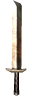 | Divinesteel Edge | ||
| Doom Herald's Horn | Doom Herald's Call Sound the Herald's horn to warn and stregthen your followers in the face of the danger lying ahead. 240.0 Second(s) Recharge 20.0 Second Duration 16.0 Meter Radius 20% Damage Absorption 100 Elemental Damage 5% Reduction to Enemy's Health 100 Vitality Damage 10% of Attack damage converted to Health |
||
| 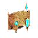 | Doumu's Headdress | * Shadow version available. | |
| Draconic Flameskull |
| ||
 | Dreadlord's Cage |
| |
 | Dreadwalkers | * Shadow version available. | |
 | Drowned Sailor | ||
 | Druidic Heirloom | Herbal Remedy Living off the land, you learn to identify and utilize medicinal plants to create healing salves. When applied it will fortify against poison and healing is accelerated for a duration. 40/50/65 Energy Cost 240/360/540.0 Second Duration +3.6/4.8/6.6 Health Regeneration per second 38/54/80% Poison Resistance |
|
 | Dying Candle | ||
| Earth Arrow | Seismic Fury The impact of your arrows shakes and crumbles the earth beneath your target. 1 Energy Cost 5 - 6 Fragments 6 Charge Levels 38.0% Chance of 1.3 - 1.7 second(s) of Stun 20% Slowed for 3.0 Seconds |
||
| Echo Axe | |||
 | Elder Lalyia's Skullcap | * Shadow version available. | |
 | Electrosilk Leggings | Electrostatic Veil When the situation calls for it, create an electrical veil around you, granting new energy to fight despite the hopelessness. Remains active while health is low. Cannot be dispelled. 10.0 Second(s) Recharge Activates when Health drops below 40% 8.0 Second Duration 369 Energy Restored Protects Against: Lightning +17% Total Damage +11.0 Energy Regeneration per second +17% Total Speed 50 - 73 Lightning Retaliation 46% Lightning Resistance 46% Energy Leech Resistance |
|
 | Eliminator's Suit | ||
 | Embrace of the Final Rest | ||
 | Endless Struggle | Part of the set : Sovereign of Void Death Ward Places a magical ward on the player that protects them from death by granting additional life when their life gets dangerously low. 300.0 Second(s) Recharge Activates when Health drops below 15% 3.0 Second Duration 450 Health Restored 46% Damage Absorption |
|
 | Ensanguined Devourers | * Shadow version available. | |
| Eruption | Required Reagents : |
||
 | Etherborn Reverie | ||
 | Everwinter | ||
 | Evil Spirit | ||
 | Eye of Erlang Shen | ||
 | Fallen Hero's Aegis | Shield Charge A running attack that slams into the enemy with your shield causing bonus damage and stunning them. 12.0 Second(s) Recharge 57/75 Energy Cost 121 - 166/210 - 301 Damage 1.0 second(s) of Stun +300% Movement Speed |
|
 | Fallen Hero's Insignia | ||
| Fangshi's Robes | Summon Undead Ninja Summon a knife-throwing skeletal ninja for a small duration. 60.0 Second(s) Recharge 90 Energy Cost Extra Life Time 60 Seconds Raised Dead - Shinobi Shozoku Attributes: Life Time 60.0 Seconds 1053 Health 250 Energy Raised Dead - Shinobi Shozoku Abilities: Dodge Attacks 15% Chance to Dodge Attacks 15% Chance to Avoid Projectiles |
||
| 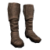 | Farstrider Boots | ||
 | Fastlearner's Signet | ||
 | Fatewriter's Inscription | ||
 | Feather Talisman | ||
 | Ferity | ||
 | Fiend's Ethos | ||
 | Filed Teeth Necklace | ||
| Final Wish | |||
  | Fired Clay | ||
   | Fish Scales |
| |
 | Flayer of Souls |
| |
 | Fleshmaw | ||
 | Floral Nectar | ||
 | Foam of Tethys | Required Reagents : |
|
 | Fool's Secret | ||
 | Force of the Svinfylkingars | Empower Boost the damage of all nearby allies for a short duration. 35.0 Second(s) Recharge 50 Energy Cost 10.0 Second Duration 12.0 Meter Radius +15% Physical Damage +15% Total Damage |
|
 | Forgotten Boots | ||
| Formicid Eggs | |||
| Fortress' Keep | |||
| 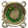 | Fossilized Snakeskin | ||
 | Gale Force | Required Reagents : |
|
| 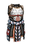 | Gear of Mu Guiying | ||
 | Ghosthunter | ||
| Gilded Hemithoorakion | |||
 | Gloomweaver's Armguards | Part of the set : Gloomweaver's Suit | |
 | Gloomweaver's Bodyguard | Part of the set : Gloomweaver's Suit | |
| 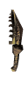 | Gloomweaver's Legtip | Part of the set : Gloomweaver's Suit | |
 | Gloomweaver's Mask | Part of the set : Gloomweaver's Suit | |
 | Gloves of the Mortician | ||
 | God Freezer | ||
| Goldblade | |||
| 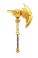 | Golden Guardian of Abydos | Solarstrike Empower your next attack with the power of the sun. 6.0 Second(s) Recharge 30 Energy Cost 50 Damage 500 Burn Damage over 10.0 Seconds 50 Fire Damage 1.5 second(s) of Stun |
|
 | Golden Javelin | ||
| 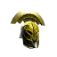 | Golden Masterpiece | ||
 | Golden Triumph | ||
 | Goldthread Gloves | ||
 | Grace of the Creators | ||
 | Gravity Crusher | * Shadow version available. | |
 | Grey Hunter's Cap | ||
| 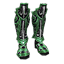 | Groundbreaker's Step | ||
| 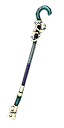 | Guiding Light | Titanic Bolt This intense lightning bolt disintegrates everything it touches. 40.0 Second(s) Recharge 425 Energy Cost 1 Projectile(s) 2.5 Meter Radius 500 Piercing Damage 1500 Lightning Damage * Shadow version available. |
|
 | Hailstorm Rod | ||
 | Halo of Eos | Required Reagents : |
|
 | Hammer of the Venomancer | ||
 | Hand of Týr | Required Reagents : |
|
 | Heartless Within | Part of the set : Sovereign of Void Summonic Demonic Archer Invoke a demonic bowman to fight under your command. 120.0 Second(s) Recharge 250 Energy Cost Demonic Archer Attributes: 1000 Health 647 Energy Demonic Archer Abilities: Envenom Weapon 1 Active Energy Cost per Second 197 Poison Damage over 3.0 Seconds 50 Energy Reserved Poison Gas Bomb 91 Energy Cost 1 Projectile(s) 6.0 Meter Radius 517 Poison Damage over 4.0 Seconds 33% Slowed for 6.0 Seconds Shrapnel 14 Energy Cost 1.5 Meter Radius 9 - 11 Fragments 193 Bleeding Damage over 4.0 Seconds 119 Piercing Damage Dodge Attacks 25% Chance to Dodge Attacks 25% Chance to Avoid Projectiles |
|
| Heart of Eternal Unrest | Monstrify “My peace is gone…” 30.0 Second(s) Recharge 30 Active Energy Cost per Second 30.0 Second Duration 8% Physical Resistance 25% Pierce Resistance +25% Total Damage 5.0% Chance of 1.0 - 3.0 second(s) of Fear +25% Strength -15% Dexterity -15% Total Speed |
||
 | Heartstinger | Lethal Strike A single deadly hit that multiplies the damage of a normal weapon attack. 12.0 Second(s) Recharge 56/62/68 Energy Cost +130/170/210% Bleeding Damage with +50% Improved Duration +70/90/110% Total Damage +130/170/210% Poison Damage with +50% Improved Duration 1.8/2.2/2.6 second(s) of Stun |
|
| Heavy Metal Wristlets | |||
 | Hecatomb | Slaughterhouse A fiendish force instills an insurmountable desire in you - to feast on the blood of your victims. 9% Chance to be Used 7 Target Maximum 270 Arc of Attack 240 Bleeding Damage over 3.0 Seconds 15% of Attack damage converted to Health * Shadow version available. |
|
| Heir's Treasure | |||
 | Hellspawn's Face | Shatter This shield technique can hit multiple targets in front of you, dealing high damage and incapacitating their skills. Requires a shield. 6.0 Second(s) Recharge 62 Energy Cost 360 Arc of Attack 3 Target Maximum 33 Damage +16% Total Damage 3.0 second(s) of Skill Disruption |
|
 | Helm of Pandion II | ||
 | Helm of the Furnace | Part of the set : The Hell Furnace | |
 | Hera's Thundercloud Shawl | ||
 | Hestia's Fire | ||
 | Highwayman's Guard | ||
| Hood of Guile | * Shadow version available. | ||
 | Horizon's End | Ice Blockade Form a wide, slow-moving wall of frost energy, damaging anything that passes through it. 8.0 Second(s) Recharge 96 Energy Cost 123 Frostburn Damage over 3.0 Seconds 63 Cold Damage 39% Slower Movement for 3.0 Seconds |
|
 | Hour of the Revenant | Required Reagents : |
|
 | Howling Ring | ||
 | Hue of Lustration | ||
  | Human Blood | ||
 | Hungering Scythe | ||
| Hunter-Seeker | Eye of the Storm A wisp ability that increases elemental damage of all nearby allies for a duration and provides protection from lightning and cold damage. 90.0 Second(s) Recharge 20.0 Second Duration 14.0 Meter Radius +50% Elemental Damages 30% Elemental Resistance |
||
 | Huntmaster's Talisman | ||
 | Hydradon Veins |
| |
| Hyperboreas' Spear | |||
 | Ifrit's Shell | Heat Shield Casts a protective heat shield on the target that absorbs damage, especially from fire. 50.0 Second(s) Recharge 63 Energy Cost 150.0 Second Duration 45% Damage Absorption Protects Against: Fire 126 Burn Retaliation over 3.0 Seconds 10% Physical Resistance |
|
 | Ill Fate | * Shadow version available. | |
| Immortal Flame |
| ||
| Immortal Ice |
| ||
| Immutable Countenance of Death | Summon Liche King In ages past, powerful sorcerers learned how to cheat Hades and persist as undead liches long after death had robbed their bodies of life. A dangerous practice of Theurgists is to bind the souls of these ancient liches to their will, thus acquiring their powers. 60.0 Second(s) Recharge 402 Energy Cost Liche King - Enslaved Soul Attributes: 751 Health 630 Energy Liche King - Enslaved Soul Abilities: Spectral Bolt 107 Elemental Damage 15% Reduction to Enemy's Health 89 Vitality Damage 15% of Attack damage converted to Health Soul Blight 53 Energy Cost 6.0 Meter Radius 33% Reduction to Enemy's Health 33% of Attack damage converted to Health 75% Reduced Resistances for 8.0 Seconds |
||
| Incapacitator | * Shadow version available. | ||
| 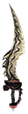 | Insanity | * Shadow version available. | |
| Inventor's Raiment | * Shadow version available. | ||
| 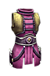 | Jacket of Love | ||
 | Jason's Armor | ||
 | Jewel of Lost Hope | ||
 | Jewel of Toxicity | Super Toxic Gas Bombs Hurl multiple poison bombs at your enemies, causing serious damage over time to all enemies in a wide area. 16.0 Second(s) Recharge 120/150/180 Energy Cost 2/3/4 Projectile(s) 4.0 Meter Radius 9 - 11 Fragments 113/166/219 Bleeding Damage over 4.0 Seconds 174/262/471 Poison Damage over 4.0 Seconds 51/94/145 Piercing Damage 5/10/25% Chance of Impaired Aim for 4.0 Seconds 10.0/20.0/50.0% Chance of 2.0 second(s) of Confusion 33% Slowed for 6.0 Seconds |
|
 | Key of Knowledge | * Shadow version available. | |
| 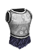 | Knight's Oath | ||
 | Kvasir's Touch | ||
 | Lamia Claw | ||
| Lawbreaker | |||
 | Legacy of the Rune Artisan | Energy Armor Weave vast amounts of Energy into a layer of magical armor for yourself and nearby allies that protects against physical attacks. 25.0 Second(s) Recharge 2307 Energy Cost 5.0 Meter Radius 4613 Damage Absorption Protects Against : Physical Pierce Bleeding 50% Stun Duration * Shadow version available. |
|
 | Legguards of Myriad Dimensions | Part of the set : Journey of Myriad Dimensions | |
 | Legguards of the Archiver | ||
| 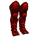 | Legguards of the Furnace | Part of the set : The Hell Furnace | |
| 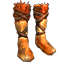 | Legs of the Teumessian Fox | Part of the set : The Hunting Paradox | |
 | Liberator's Topcoat | ||
 | Librarian's Silencer | Knowledge is Power Focusing on the inner workings of your spells allows you to cast them almost effortlessly. 15.0 Second(s) Recharge 200 Energy Cost 1.5 Second Duration +1000% Energy Regeneration -80% Energy Cost * Shadow version available. |
|
 | Lifedrinker's Insignia |
| |
 | Lifeshatter | ||
 | Line of Epic Heroes | Faethontas' Call "Good day to all of you, ladies and gentlemen! This is Mr.Fae, and here we have it! This is my top secret build : Mr.Fae Build!" 300.0 Second(s) Recharge 500 Energy Cost Mr.Fae Attributes: 1600 Health 1500 Energy Mr.Fae Abilities: Mr.Fae's Membership Aura 12.0 Meter Radius +10% Total Damage +100% Health Regeneration -10% Energy Cost Bolt of Zeus 6.0 Second(s) Recharge 80 Energy Cost 4.0 Meter Radius 300 Electrical Burn Damage over 3.0 Seconds 300 Lightning Damage 1.0 second(s) of Stun Giant's Might 30.0 Second(s) Recharge 15.0 Second Duration 20% Damage Absorption +50% Physical Damage +500% Health Regeneration -15% Total Speed 50% Physical Resistance Great Alexander's Charge 4.0 Second(s) Recharge 150 Damage 5.0 second(s) of Skill Disruption 2.5 second(s) of Stun +300% Movement Speed DOTer's Lingering Pain 6.0 Second(s) Recharge 5.0 Meter Radius 100 Bleeding Damage over 5.0 Seconds 100 Burn Damage over 5.0 Seconds 100 Frostburn Damage over 5.0 Seconds 100 Electrical Burn Damage over 5.0 Seconds 100 Poison Damage over 5.0 Seconds 100 Vitality Decay over 5.0 Seconds 100 Life Leech over 5.0 Seconds 100 Energy Leech over 5.0 Seconds |
|
 | Lorekeeper's Clothes | ||
| Lug, the Goomaker |
| ||
 | Lurker's Suit | ||
  | Maenad Tail | ||
| 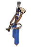 | Magehunter's Quiver | ||
 | Magnetic Ring | ||
| Mark of the Polemistes | |||
| Martyr of the Soul | * Shadow version available. | ||
 | Mask of Madness | ||
 | Mechanized Heart | ||
 | Medallion of Aqua | ??? | |
 | Medallion of Archery | ??? | |
 | Medallion of Barbarism | ??? | |
 | Medallion of Chaos | ??? | |
| Medallion of Geomancy | ??? | ||
 | Medallion of Lifegivng | ??? | |
 | Medallion of Necromancy | ??? | |
 | Medallion of Science | ??? | |
| Medallion of Time | ??? | ||
| Medallion of Witchcraft | ??? | ||
| Melqart's Oil | Required Reagents : |
||
 | Memento of Hope | Required Reagents : |
|
 | Menestheus' Rage | * Shadow version available. | |
 | Mercenary's Bloodlust | ||
 | Merciless Judgement | Part of the set : Sovereign of Void | |
 | Meteorite | Seismic Strength Charge the power of the Earth in your weapons, incapacitating multiple foes in a single attack. Later levels increase the number of targets hit at once. Apply this skill to your left mouse button. Requires a melee weapon. 1 Energy Cost 360 Arc of Attack 5 Target Maximum 6 Charge Levels 33.0% Chance of 1.1 - 1.5 second(s) of Stun 16% Slowed for 3.0 Seconds |
|
| 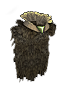 | Midnight Flight | Midnight Flight Target an unsuspecting opponent and, with a bird’s grace and speed, deliver an elemental weapon attack. Requires a melee weapon. 12.0 Second(s) Recharge 109 Energy Cost +20% Pierce +16% Total Damage 85 Piercing Damage +300% Movement Speed 100% Weapon Base Damage becomes Elemental * Shadow version available. |
|
| Mirror Veil | |||
 | Moonrise Greaves | ||
 | Moonshaped Pelta | ||
 | Mournful Rose | ||
| Mulgor’s Inextinguishable Fury |
| ||
| Mythical Lich Crown |
| ||
 | Mythological Enigma | ||
 | Naturalist's Loop | ||
| 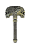 | Nature's Revenge | * Shadow version available. | |
 | Naturespeaker's Bracelets | Part of the set : Naturespeaker's Outfit | |
| Naturespeaker's Staff | Part of the set : Naturespeaker's Outfit | ||
 | Naturespeaker's Torso | Part of the set : Naturespeaker's Outfit | |
| 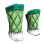 | Naturespeaker's Wraps | Part of the set : Naturespeaker's Outfit | |
 | Naturespeaker's Wreath | Part of the : Naturespeaker's Outfit | |
| Necrochakram | |||
 | Night's Ageless Visage |
| Part of the set : Night Eternal |
 | Night's Cold Embrace |
| Part of the set : Night Eternal |
 | Night's Perforating Grip |
| Part of the set : Night Eternal Sands of Sleep Puts enemies to sleep, rendering them immobile for a duration or until awakened by an attack. 4.0 Second(s) Recharge Affects up to 5 targets 60 Energy Cost 5.3 - 9.6 second(s) of Sleep |
| 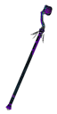 | Night's Ravaging Kiss |
| Part of the set : Night Eternal Haunting Dreams Replace the thoughts of your enemies with dreadful nightmares, tearing their sanity apart. 20.0 Second(s) Recharge 140 Energy Cost 8.0 Meter Radius 240 Electrical Burn Damage over 3.0 Seconds 240 Vitality Decay over 3.0 Seconds 33% Reduced Resistances for 3.0 Seconds 3.0 - 7.0 second(s) of Sleep |
 | Night's Silent Step |
| Part of the set : Night Eternal |
| Nightstalker's Binding | |||
 | Noble Spirit | * Shadow version available. | |
 | Nose of the Sphinx | Required Reagents : |
|
 | Oath of the Arcane | Part of the set : Arcane Barrage | |
 | Ogre-Warrior's Armor |
| Quick Recovery A strong shield arm allows you to block multiple attackers with amazing speed when necessary but it can only be kept up for a short time. 60.0 Second(s) Recharge 50 Energy Cost 45.0 Second Duration -81% Shield Recovery Time +10% Armor Absorption +25% Shield Block Chance |
 | Olympian Greaves | ||
| Oeneus' Necklace | Battle Rage Each enemy hit has a chance of sending you into a battle rage that adds bonus damage to attacks and increases Offensive Ability for a short duration. 12.0 Second(s) Recharge 8% Chance of Activating 10.0 Second(s) Duration 33 Damage +33% Offensive Ability |
||
 | Ornamental Earring | ||
 | Overgrowth Barrier | ||
 | Pabilsag Stings | ||
 | Pale Immolation of Muspelheim | * Shadow version available. | |
| Passionless Touch | Part of the set : Sovereign of Void Summon Demonic Lancer Invoke a demonic spearman to fight under your command. 120.0 Second(s) Recharge 250 Energy Cost Demonic Lancer Attributes: 1200 Health 674 Energy Demonic Lancer Abilities: Devil's Rush 8.0 Second(s) 68 Energy Cost +120% Physical Damage +60% Pierce Damage 80 Piercing Damage 198 Vitality Damage +500% Movement Speed Befoul Weapons 3 Active Energy Cost per Second +87% Vitality Damage 56 Vitality Damage 50 Energy Reserved Calculated Strike 100% Chance to pass through Enemies 3 Charge Levels +221% Physical Damage 159 Piercing Damage Dodge Attacks 25% Chance to Dodge Attacks 25% Chance to Avoid Projectiles |
||
| 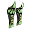 | Path of Ta-Bitjet | ||
 | Pestilence | ||
 | Petrified Cuffs | ||
 | Phantomlight | ||
| 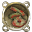 | Pharaonic Wrappings |
| |
| 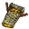 | Pocket Rune | Rune Weapon In the rush of glorious combat, every strike you land pushes your mind further into an ecstatic state, increasing the force of all magical abilities. Assign this skill to your left mouse button. 2/3/3 Energy Cost 10/12/15 Charge Levels +20/24/30% Total Damage 20/24/30 Energy Leech per Second +30/36/45% Intelligence 50/60/75% Weapon Base Damage becomes Elemental |
|
| Power of the Hekatonkheires | |||
 | Preeminent Od | Flow Control Bind the evanescent od of nature itself to your will. 1 Energy Cost 8 Charge Levels +16% Total Damage +56% Burn Damage +56% Frostburn Damage 24% Chance to Fumble attacks for 3.0 Seconds +24% Attack Speed * Shadow version available. |
|
 | Preserved Reptile Eye | ||
 | Prey Snatcher | Ensnare Casts a weighted net around the feet of an enemy holding them in place but not preventing them from attacking if you are within their range. 3.0 Second(s) Recharge 19 Energy Cost 5.1 Energy Cost 0.7 Meter Radius -300% Defensive Ability -25% Movement Speed |
|
| 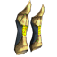 | Protectors of the Godly Emissary |
| |
 | Ptah's Creation | ||
| Pulsating Bracelets | |||
| Purificator | |||
 | Pyrausta's Thorax | ||
 | Pyromancer's Bow | ||
 | Quietus | ||
 | Raging Band | ||
 | Rainmaker's Harness | ||
 | Rainmaker's Mirror | ||
 | Ratlord's Battlepack | ||
| Redeemer of Lost Honor | |||
| Remains of Chrysippus' Work | |||
 | Ring of Matricide | Part of the set : Innate Murderer | |
| Ring of Patricide | Part of the set : Innate Murderer | ||
| Ring of Shadows | |||
| Ritual Lance | |||
 | Robes of Experimentation | ||
 | Robes of the Hydromagus | Winter Aura This aura slows down all enemies nearby and occasionally freezes them instantly 5.0 Second(s) Recharge 4 Active Energy Cost per Second 3.0 Meter Radius 46 Cold Damage 10.0% Chance of 1.5 second(s) of Freeze 10% Slowed for 1.0 Seconds |
|
 | Rockbender's Staff | ||
 | Rock Formation | ||
 | Root of Chaos | Required Reagents : |
|
| Rot Totem | |||
 | Rubiline Circlet | ||
 | Ruby Necklace | ||
 | Runestone Band | ||
| 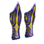 | Sacral Wind | ||
 | Sandqueen's Helmet | Ring of Flame Encircles you in a searing ring of flames burning all enemies that come within its radius. 4.0 Second(s) Recharge 20 Active Energy Cost per Second 3.8 Meter Radius 102 Fire Damage |
|
 | Sands of Kronos | Required Reagents : |
|
 | Sandstorm Sniper | ||
 | Sapphire Armlets | ||
 | Satyr Horns |
| |
 | Scale of Tiamat | Required Reagents : Symbol of Primordial Chaos This chaos-imbued seal bursts every few moments with the power which reaches into the depths of destruction and creation itself. 36.0 Second(s) Recharge 150 Energy Cost 9.0 Second Duration 5.0 Meter Radius 172 Damage Chance for one of the following: 100 Bleeding Damage over 2.0 Seconds 100 Electrical Burn Damage over 2.0 Seconds 33 - 96 Lightning Damage | |
 | Scarab of Dawn |
| |
 | Scarab Pendant |
| |
 | Scarlet Shinguards | ||
 | Sceptre of Lamashtu | * Shadow version available. | |
 | Seal of the Arcane | Part of the set : Arcane Barrage | |
 | Seal of the Fallen |
| |
 | Seal of the Restless King | ||
 | Secret Agent's Garb | ||
 | Shackles of Liberation | * Shadow version available. | |
| 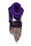 | Shadowsneaker's Harness | Phantom Strike Vanish from the waking world and reappear before a target enemy to deliver a monstrous attack. 6.0 Second(s) Recharge 63 Energy Cost +239% Total Damage |
|
| Shapes in the Light | Required Reagents : |
||
 | Shapeshifting Mudball | ||
 | Shieldbreaker | ||
 | Shimmering Diamond Trinket | Minion Blessing Bless your pets with brief, but godlike strength. 45.0 Second(s) Recharge 140 Energy Cost 3.0 Second Duration Bonus to All Pets: 20% of Attack damage converted to Health 60% Physical Resistance 60% Elemental Resistance +75% Total Speed |
|
 | Shining Gold Armjewels | ||
 | Shirt of Nessus | ||
 | Shroud of Myriad Dimensions | Part of the set : Journey of Myriad Dimensions | |
 | Signet of Cold | ||
| Silver Limbcutter | |||
 | Silverthread Gloves | ||
 | Sinister Effigy |
| |
 | Si'xoi-lap | Part of the set : Embodiment of Corruption Acidic Assault Throw yourself into a battle trance, ever increasing your damage and resilience to burn and poison. 1 Energy Cost 8 Charge Levels +40% Burn Damage +40% Instant Poison Damage +36% Attack Speed 100% Increase in Projectile Speed 80% Fire Resistance 80% Poison Resistance |
|
| 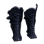 | Si'xoi-orp | Part of the set : Embodiment of Corruption | |
| 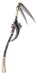 | Skeletal Agonizer | Bone Stakes Throw a flurry of sharpened bones which impale and pierce through armor and flesh. 12.0 Second(s) Recharge 75 Energy Cost 5 Projectile(s) 50% Chance to pass through Enemies 160 Piercing Damage 15% Reduction to Enemy's Health 90 Vitality Damage 15.0% Chance of 2.0 - 5.0 second(s) of Fear * Shadow version available. |
|
 | Slayer of the Thirteenth Dynasty | Runeword: Explode Weapons inscribed with this powerful rune may cause a successful hit to blast outward, striking multiple enemies. 27% Chance to be Used 120 Arc of Attack 2.5 Meter Radius 60 Damage 60 Fire Damage 0.5 second(s) of Stun |
|
 | Snakeskin Band | ||
| So-dam'oh | Part of the set : Embodiment of Corruption | ||
 | Solarblade |
| Devouring Flame A barrage of glaring orbs engulfs the battlefield in vampiric flames. 45/75/110 Energy Cost 3.0 Meter Radius 3 - 4/4 - 5/5 - 6 Fragments 33% Chance of: 90/210/390 Burn Damage over 3.0 Seconds 45/90/135 Life Leech over 3.0 Seconds 40/60/80 Fire Damage 40/60/80 Vitality Damage |
 | Sopdu's Voice | Lightning Mastery Mastery over elemental forces allows you to share your thundering powers with companions and friendly units. 25.0 Second(s) Recharge 100 Energy Cost 240.0 Second Duration +20% Lightning Damage 70 Lightning Damage * Shadow version available. |
|
 | Sorrow's Song | ||
 | Soul Lantern | Required Reagents : |
|
| Soul Rage | |||
 | Spartacus Legend | * Shadow version available. | |
 | Spectre | * Shadow version available. | |
| 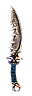 | Speedy Penknife | ||
 | Spellrage Coil | Spell Breaker A pulse of negatively charged energy dispels hostile enchantements on allies or, when cast on enemies, breaks their beneficial enchantements and negates a portion of their energy. This attack inflicts bonus damage when used against Magical creatures. 6.0 Second(s) Recharge 42 Energy Cost 6.0 Meter Radius 60 Damage 66% Energy Drain +50% Damage to Magical * Shadow version available. |
|
 | Spellsword's Signet | Sorcerer’s Blade Spellswords who posses both weapon proficiency and arcane knowledge combine the two of them to form a completely new arsenal of attacks. Requires a melee weapon. 6.0 Second(s) Recharge 163 Electrical Burn Damage over 3.0 Seconds 64 Elemental Damage 32 - 192 Lightning Damage 30% Reduction to Enemy's Health |
|
| Spellwind Blade | Energy Shield Creates a shield of energy that will nullify incoming damage from elemental attacks. 60.0 Second(s) Recharge 84 Energy Cost 200.0 Second Duration 40% Damage Absorption Protects Against : Lightning Cold |
||
 | Spinesplitter | ||
 | Spirit Catcher |
| Summon Spirit Boars Summon a pair of spirit boars that fight on your side. 120.0 Second(s) Recharge 80/115/153 Energy Cost 2 Summon Limit Spirit Animal Attributes: 355/3312/9864 Health 110/430/1005 Energy Spirit Animal Abilities: 14 - 20/24 - 31/36 - 43 Damage |
 | Spirit Conduit | ||
| 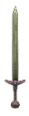 | Spoilmaker | Provides loot orbs from Legendary Act 5 | |
 | Staff of Bouzyges | ||
 | Staff of the Jiangshi | ||
 | Stardust Knot | ||
 | Stealer of Ka | ||
| 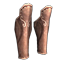 | Steps of the General | ||
| Stormtrooper | |||
| 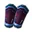 | Straps of Witchcraft | ||
 | Strength of the Bull | Required Reagents : |
|
 | Sundering Destroyer | The Ultimate Shattering Impact Deliver the mightiest of blows, with forcer that neither humans nor gods have seen before. Requires a club. 180.0 Second(s) Recharge 1000 Energy Cost 360 Arc of Attack 3 Target Maximum +400% Total Damage 10.0 second(s) of Stun |
|
 | Tainted Sigil | ||
| The Devourer | |||
| The Eternal Menace | * Shadow version available. | ||
| 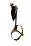 | The Flagbearer | Battle Standard Throw down a might standard to embolden the hearts of nearby allies. 60.0 Second(s) Recharge 50 Energy Cost Extra Life Time 28 Seconds Battle Standard Attributes: Life Time 28.0 Seconds 330 Health Battle Standard Abilities: Battle Standard 50.0 Second Duration 12.0 Meter Radius 25% Damage Absorption +1 to all skills 87 Damage +56 Offensive Ability -50% Energy Cost * Shadow version available. |
|
 | The Flameforged | Fiery Embrace Release bursts of all-devouring flames which expose vulnerability to volcanic elements, all whilst heavily burning and crippling enemies around you. 2 Active Energy Cost per Second 4.0 Meter Radius 200 Energy Reserved -25% Physical Resistance -25% Fire Resistance -15% Offensive Ability |
|
 | The Gazing Eye | ||
 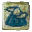 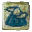 | The Great Deity of the Northern Peak | ||
    | The Long-Forgotten |
| Appears in 4 different versions, which determines the damage type that will appear on your weapon. All versions have the same chance to drop. The following damage types can be found : Burn, Frostburn, Electrical Burn, Vitality Decay |
 | The Lord of Death's Garb | Deathchill Aura A deathly chill radiates from the character slowing the attack and movement of enemies as it diminishes their life. 4.0 Second(s) Recharge 1 Active Energy 1.0 Second Duration 4.5 Meter Radius 3 - 15% Reduction to Enemy's Health -33% Total Speed |
|
| 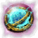 | The Pride of Atlantis | Required Reagents : Tridental Totem This weapon-like totem is charged with powerful current which strikes and disables multiple enemies with a single discharge. 8.0 Second(s) Recharge 120 Energy Cost Extra Life Time 30 Seconds 3 Summon Limit Lightning Rod Attributes: Life Time 30.0 Seconds 750 Health 750 Energy Lightning Rod Abilities: Lightning Beam 3.0 Second(s) Recharge Affects up to 5 targets 200 - 400 Lightning Damage 5 - 10 Reduced Resistances for 3.0 Seconds 25.0% Chance of 1.0 - 2.0 second(s) of Stun Electrical Aura 100 Electrical Burn Retaliation over 2.0 Seconds 20% Reduced Defensive Ability Retaliation for 2.0 Seconds |
|
 | The Regurgitator | ||
 | The Silent One | ||
| The Skyfallen | * Shadow version available. | ||
 | The Stolen Artifacts | ||
 | The Sword in the Stone | * Shadow version available. | |
| 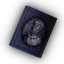 | Theophrastus' Knowledge | ||
 | Thief's Lucky Charm | ||
 | Thornmail | ||
| Thunderstruck Drill | * Shadow version available. | ||
| Tiger King Honor Guard | |||
 | Tormentor | * Shadow version available. | |
 | Torso of Ceyx | ||
 | Tourmaline Axe | ||
| Toxeus the Murdered | Only drops off the Toxeus from Rhodes' Secret passage Distort Reality Sends out a powerful ripple of distortion around the player that tears the fabric of reality, causing severe damage to enemies caught within it. 12.0 Second(s) Recharge 160 Energy Cost 8.0 Meter Radius 315 Damage 228 Vitality Damage 1.5 second(s) of Stun |
||
 | Tranquiliser | ||
 | Trauma | ||
| Trident of the Five Oceans | * Shadow version available. | ||
 | Twilight Tempest | Required Reagents : |
|
 | Underworld Stinger | ||
  | Unmelting Ice | ||
 | Vampire Coat | ||
 | Vengeful Eye |
| Arcane Mirror The thousandfold reflection of this sphere of mirrors damages those who strike it using the power of their own attacks. 120.0 Second(s) Recharge 50/100/150 Energy Cost 12.0 Second Duration 100/160/220% Damage Reflected |
| 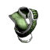 | Vest of the First Apostle | ||
 | Vest of the Manacrazed | ||
  | Vicious Essence | ||
 | Victor of the Arena | Bravado Your continuous success in battle makes you equally strong as foolhardy. 1 Active Energy Cost per Second +30% Strength 50 Energy Reserved -10% Physical Resistance |
|
 | Visage of Woe | ||
 | Vitality Reaver |
| |
 | Vixen's Heart | Part of the set : Vixen's Legacy | |
 | Vixen's Fang | Part of the set : Vixen's Legacy | |
 | Voiceless Scream | Part of the set : Sovereign of Void | |
| Volcanic Ring | |||
 | Voltaic Conductor | * Shadow version available. | |
 | Vorpal Blade | Required Reagents : |
|
| Vow of Perseverance | Part of the set : Eternal Alliance | ||
| Vow of Will | Part of the set : Eternal Alliance | ||
 | Wall of Evil | * Shadow version available. | |
 | Wand of Dead Sailors | Ghostly Shores Call forth waves of water, which carry souls of drowned sailors, to drown your enemies in their misery. 20.0 Second(s) Recharge 200 Energy Cost 270 Cold Damage 270 Vitality Damage 35% Slowed for 3.0 Seconds * Shadow version available. |
|
| Warding Torc | |||
 | Warlord's Ultimatum | ||
 | Waywatcher's Caveat | ||
 | Webweaver's Visor | Snaring Web Attack Throw a ball of sticky web at your opponents, to temporarily immobilize them. 15.0 Second(s) Recharge 90 Energy Cost 3.0 Second Duration 363 Poison Damage over 3.0 Seconds 100 Instant Poison Damage 20% Reduced Resistances for 3.0 Seconds 3.0 second(s) of Immobilization |
|
 | Wepwawet's Adze | ||
 | Winged Wanderers | * Shadow version available. | |
 | Winterflame | Required Reagents : |
|
 | Wodan's Price | Required Reagents : |
|
 | Wood-Hammer | ||
| Worldsaver |
| ||
 | Wrath of the Serpent | ||
 | Wreath of the Misbegotten | * Shadow version available. | |
| Xiangshuishen's Supremacy | |||
 | Zeal of the Fanatic | Required Reagents : Shell of Light In time of need, shield yourself with a force field that minimizes the damage received. 20.0 Second(s) Recharge 75 Active Energy Cost per Second 2.0 Second Duration 300% Damage Absorption 300% Sleep Resistance 300% Stun Resistance 300% Reduced Freeze Duration 300% Reduced Petrify Duration 300% Slow Resistance |